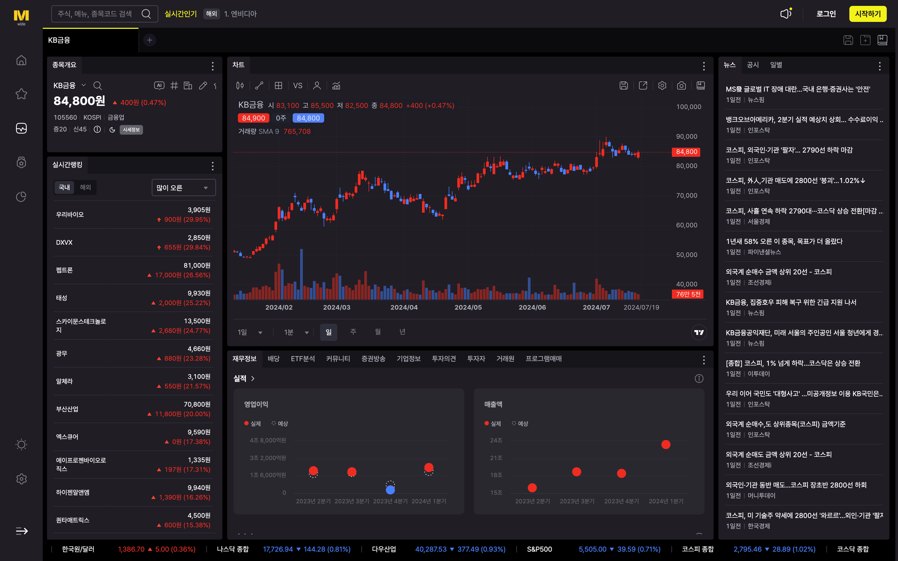
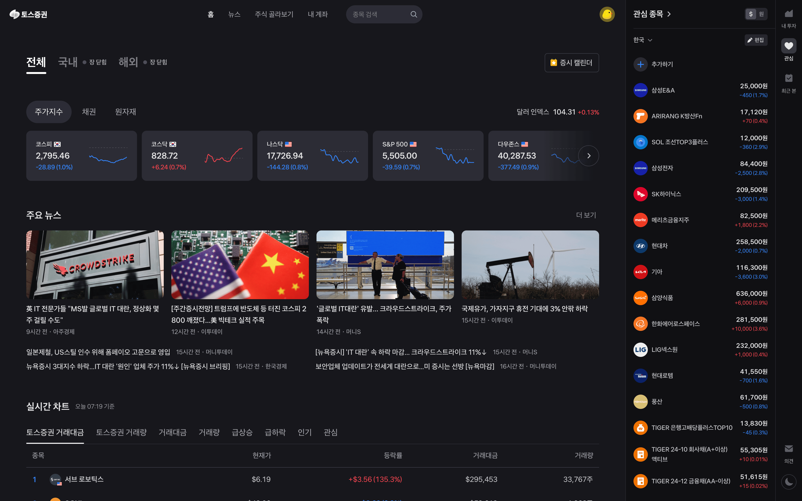

토스증권 VS KB증권, WTS 유사성 분쟁?
뉴스 피드를 읽다 아주 익숙한 단어가 보였다. 제목이 무려 'KB증권 VS 토스증권, WTS 유사성 두고 법적분쟁'이다. 정말이지 군침이 도는 읽고 싶은 제목이다. 그러니 링크를 클릭해 볼 수밖에 없었다.
KB증권 측은 19일 “토스증권 WTS의 사용자인터페이스(UI)와 사용자경험(UX)과 관련 부분이 자사 WTS인 ‘M-able와이드’와 유사한 면이 많다고 판단했다”며 가처분 신청을 제기했다고 밝혔다. (출처📎)
둘 다 주력 WTS로 사용하는 입장에서는 KB증권에겐 좀 미안하지만 KB증권이 주장하는 바를 전혀 이해할 수가 없다. 이 둘은 추구하는 UX도 다르고 그래서 UI도 다르고 기능성 조차도 다르다. 닮았다고 해봤자 다크모드 색상 팔레트 정도가 비슷할 뿐이다.
 KB증권의 WTS인 마블와이드는 배치가 꽤 자유로운 편이지만 일부 불편하고 문제점도 많다.
둘 중 선호하는 것 하나를 꼽으라면 고민할 것도 없이 토스증권의 WTS를 꼽고 싶다. 상대적으로 편하고 미려하고 빠르고 정보의 질도 더 좋다. 비교할 걸 비교해야 할 텐데 KB증권 측은 무슨 생각으로 이러는 것인가 개인적으로는 이해가 잘 안 될 정도다.
 토스증권의 WTS는 자유도가 약간 떨어지지만 UX를 잘 따른 편리한 UI 구성을 갖추고 있다.
물론 이 사건과는 별개로 토스증권이든 KB증권이든 모두 응원한다. WTS를 내놓았다는 것만으로도 충분히 호감가는 증권사다. 그저 좀 더 사이좋게 지냈으면 좋겠다. 물론 맥 앱을 내놓은 한국투자증권도 응원한다. 반쪽짜리 WTS만 제공하는 미래에셋증권이나 쓸 수 없는 쓰레기 같은 키움증권에 비하면 선녀 같은 증권사들이다.